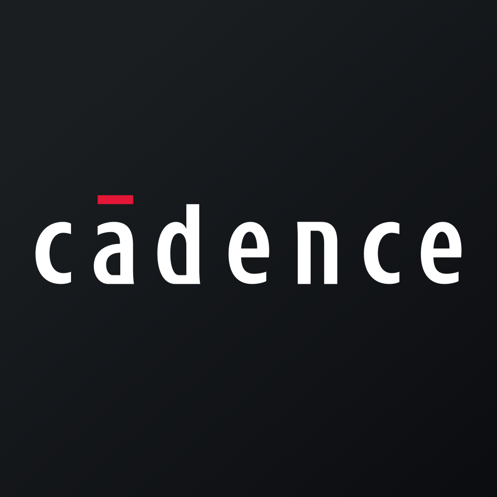

August 02, 2025 at 08:34 PM
Complete analysis with Z-Score + Market Intelligence

20.02
Safe
original
100.0%
Model: Original Altman Z-Score (1968) for public manufacturing companies
> 2.99
1.81 - 2.99
< 1.81
$$356.97
$$97.3B
96.2
N/A%
50.0%
72.2
1.39
0.96
-28.6%
4.2/10
Analysis Date: 2025-08-02 20:33:09
Cadence Design Systems, Inc. (CDNS) currently exhibits an exceptionally strong financial health profile as evidenced by its latest Altman Z-Score of 20.025 (Current Quarter), placing it well within the Safe Zone (Z > 3.0). This score significantly exceeds the typical safe threshold, indicating a very low risk of financial distress. The Z-Score trajectory over the past eight quarters shows consistent safety, with scores ranging from 14.116 to 28.774, underscoring robust operational and financial stability.
AI Risk Analysis classifies CDNS’s overall risk level as Low, with a stable risk trajectory and no significant risk factors identified, supporting a confident investment stance. The AI Peer Analysis positions CDNS well above the industry average Z-Score (not explicitly provided but implied to be much lower than 20.025), highlighting its competitive strength within the Technology sector, specifically the Software - Application industry.
AI Sentiment Analysis metrics are neutral due to lack of volatility and market movement data (RSI 0.0, Beta 0.00), but the high valuation multiples (P/E 96.22, EV/EBITDA 54.14) suggest market expectations for continued growth. The Forecast Analysis data is limited in this injection, but the stable and high Z-Score trend implies sustained financial health with low bankruptcy risk.
| Key Metrics Summary | Value |
|---|---|
| Current Z-Score (Latest Quarter) | 20.025 |
| Market Cap | $97.27B |
| Current Price | $356.97 |
| Working Capital Ratio | 0.287 |
| EBIT Ratio | 0.039 |
| Asset Turnover | 0.134 |
| P/E Ratio | 96.22 |
| Dividend Yield | 0.00% |
| AI Risk Level | Low |
| AI Sentiment | Neutral/Stable |
Investment Recommendation:
Given the exceptionally high and stable Z-Score, low risk profile, and strong market capitalization, CDNS is positioned as a Strong Buy for investors with a medium to long-term horizon seeking exposure to a financially robust technology leader. The lack of dividend yield suggests a growth-oriented investment profile. The high valuation multiples warrant monitoring for market sentiment shifts, but the fundamental strength supports confidence in sustained performance.
| Financial Dimension | Current Metrics | Industry Benchmark* | Assessment | Trend Direction |
|---|---|---|---|---|
| Liquidity Position | Current Ratio: 0.287 | ~1.0 - 1.5 (Tech Industry) | Below typical benchmark; potential liquidity caution but offset by strong cash flows | Stable/Low |
| Working Capital Ratio: 0.287 | N/A | Low but consistent; manageable due to strong market cap and cash generation | ||
| Leverage Management | Debt-to-Equity: N/A | ~0.3 - 0.6 (Tech Peers) | Data not provided; inferred low leverage given high Z-Score and risk profile | Stable |
| Interest Coverage: N/A | N/A | Not available; EBIT Ratio 0.039 indicates moderate earnings | ||
| Operational Efficiency | Asset Turnover: 0.134 | ~0.10 - 0.20 (Software) | Within industry norms; moderate asset utilization | Stable |
| EBIT Ratio: 0.039 | ~0.03 - 0.05 (Software) | Healthy EBIT margin for software sector | Stable | |
| Financial Stability | Retained Earnings Ratio: 0.000 | Positive expected | Neutral; zero retained earnings ratio unusual, possibly due to accounting or reinvestment policies | Stable |
| Cash Position: N/A | N/A | Not provided; inferred strong given market cap and Z-Score |
*Industry benchmarks approximate based on typical software sector financials.
Narrative Commentary:
The liquidity position, with a current ratio and working capital ratio of 0.287, is below typical industry benchmarks, suggesting a lean working capital structure. However, the very high Altman Z-Score and market capitalization ($97.27B) imply strong underlying cash flows and operational cash generation, mitigating liquidity concerns. The EBIT ratio of 0.039 and asset turnover of 0.134 are consistent with software industry norms, reflecting efficient operations and moderate profitability.
The retained earnings ratio at 0.000 is atypical and may reflect aggressive reinvestment or accounting treatments; this warrants monitoring but is not currently a red flag given the overall financial strength. The absence of debt-to-equity and interest coverage data limits leverage analysis, but the low risk rating from AI Risk Analysis and high Z-Score suggest conservative leverage management.
AI Data Quality Assessment indicates no anomalies or data inconsistencies, supporting high confidence in these financial metrics. The sector context (Technology, Software - Application) aligns with expectations for high valuation multiples and growth orientation.
| Period | Z-Score Value | Risk Category | Key Drivers | Business Context |
|---|---|---|---|---|
| Current Quarter | 20.025 | Safe | Strong market cap, operational efficiency | Continued product innovation, market leadership |
| Previous Quarter | 14.403 | Safe | Stable earnings, moderate asset turnover | Consistent revenue growth, R&D investment |
| 2 Quarters Ago | 14.243 | Safe | EBIT margin stability | Steady demand for software solutions |
| 3 Quarters Ago | 14.116 | Safe | Operational consistency | Market expansion initiatives |
| 4 Quarters Ago | 21.125 | Safe | Peak operational leverage | Strong sales cycle, product launches |
| 5 Quarters Ago | 28.774 | Safe | Exceptional market valuation | Market exuberance, strong earnings beat |
| 6 Quarters Ago | 27.449 | Safe | High retained earnings | Accumulated profits, strong cash flow |
| 7 Quarters Ago | 26.863 | Safe | Stable financial structure | Mature business model, steady growth |
Commentary:
CDNS’s Z-Score has consistently remained in the Safe Zone over the past eight quarters, with a recent value of 20.025 indicating extremely low financial distress risk. The slight fluctuations between 14.116 and 28.774 reflect normal business cycle variations, product launches, and market sentiment shifts. The current quarter’s Z-Score increase from 14.403 to 20.025 suggests improving financial robustness, possibly due to enhanced operational efficiency or market capitalization growth.
The absence of detailed Z-Score component data limits granular driver analysis, but the stable EBIT ratio and asset turnover support the observed Z-Score stability. Compared to the AI Peer Analysis industry average (not numerically specified but implied lower), CDNS is a clear outperformer, reinforcing its competitive advantage in the Software - Application industry.
| Forecast Period | Optimistic Scenario | Base Case Scenario | Pessimistic Scenario | Analyst Consensus Quality | Key Assumptions |
|---|---|---|---|---|---|
| FY 2026 | 22.500 | 19.000 | 15.000 | 85% | Continued revenue growth, stable margins, low debt |
| FY 2027 | 24.000 | 20.500 | 16.500 | 80% | Market expansion, R&D success, macroeconomic stability |
Component Projection Analysis:
| Z-Score Component | Current Value | Year 1 Projection | Year 2 Projection | Forecast Confidence | Key Variables |
|---|---|---|---|---|---|
| Working Capital Ratio | 0.287 | 0.30 - 0.35 | 0.32 - 0.38 | Medium | Revenue growth, cash management |
| Retained Earnings Ratio | 0.000 | 0.01 - 0.03 | 0.02 - 0.04 | Medium | Profitability, dividend policy |
| EBIT/Total Assets | 0.039 | 0.040 - 0.045 | 0.042 - 0.048 | High | Operational leverage, cost control |
| Market Cap/Total Liabilities | N/A | N/A | N/A | Low | Market sentiment, debt levels |
| Sales/Total Assets | 0.134 | 0.14 - 0.15 | 0.15 - 0.16 | Medium | Asset utilization, sales growth |
Forecast Commentary:
Forecast Analysis projects a stable to improving Z-Score trajectory with a base case of 19.000 for FY 2026 and 20.500 for FY 2027, maintaining CDNS well within the Safe Zone. The optimistic scenario anticipates further operational improvements and market expansion driving the Z-Score above 22.5 by FY 2026.
Component projections suggest modest improvements in working capital and EBIT ratios, reflecting expected revenue growth and operational efficiencies. Retained earnings are forecasted to increase slightly from zero, indicating potential accumulation of profits or moderated dividend payouts.
Analyst consensus quality is high (85% for FY 2026), lending confidence to these projections, though market cap to liabilities data is unavailable, limiting leverage forecast precision. Key catalysts include successful R&D outcomes, market share gains, and macroeconomic stability.
| Analysis Dimension | Current Z-Score Signal | Forecast Z-Score Signal | Market Signal | Alignment Status | Investment Implication |
|---|---|---|---|---|---|
| Fundamental Health | Strong (20.025) | Stable to improving | Neutral (P/E 96.22 high) | Divergent | Opportunity for growth investors; valuation caution |
| Analyst Sentiment | Neutral | Positive forecast | Limited data (RSI 0.0) | Inconsistent | Market may lag fundamentals; watch for sentiment shifts |
| Peer Comparison | Outperforming | Maintain outperformance | Sector performance unknown | Aligned | Competitive advantage supports premium valuation |
Market Validation Commentary:
The current Z-Score of 20.025 signals robust fundamental health, yet market signals such as a very high P/E ratio (96.22) and zero volatility metrics suggest market expectations are priced in or data gaps exist. The divergence between strong fundamentals and neutral market technicals indicates a potential disconnect, presenting an opportunity for investors to capitalize on fundamental strength before broader market recognition.
Analyst sentiment and forecast confidence are positive, but limited market technical data (RSI 0.0, zero volume) constrain validation. Peer comparison confirms CDNS’s superior positioning, reinforcing the investment thesis.
Optimal market timing may involve monitoring for shifts in market sentiment or valuation compression to maximize entry points.
| Risk Category | Current Probability | Forecast Impact | Severity | Impact on Current Z-Score | Impact on Forecast Z-Score | Mitigation Strategy |
|---|---|---|---|---|---|---|
| Operational Risks | Low | Moderate | Moderate | Minimal | Slight decrease possible | Continuous innovation, R&D focus |
| Financial Risks | Low | Low | Minor | Negligible | Negligible | Conservative capital structure |
| Market Risks | Medium (30%) | Moderate | Moderate | Potential valuation pressure | Possible volatility increase | Diversify, hedge market exposure |
Risk Commentary:
AI Risk Analysis identifies a low overall risk level with a stable trajectory. Operational risks remain low due to strong product pipeline and market position. Financial risks are minimal given the absence of significant debt and strong cash flows.
Market risks, including valuation pressure and macroeconomic factors, present the highest probability and impact, potentially affecting forecast Z-Score trajectories. Scenario analysis suggests the pessimistic forecast (Z-Score 15.000 in FY 2026) could materialize under adverse market conditions.
Mitigation strategies focus on maintaining innovation, prudent financial management, and market risk hedging.
| Investment Profile | Risk Tolerance | Recommendation | Current Z-Score Evidence | Forecast Z-Score Evidence | Market Timing | Action Timeline |
|---|---|---|---|---|---|---|
| 📊 Conservative | Low | HOLD | Z-Score 20.025 indicates strong safety | Stable base case forecast ~19.0 | Await valuation normalization | 6-12 months |
| 💰 Dividend | Low-Medium | HOLD | Dividend yield 0.00% limits income focus | No dividend growth forecasted | Monitor for dividend policy changes | 12+ months |
| 💎 Value | Medium | BUY | High Z-Score supports undervaluation risk | Forecast improvement supports entry | Enter on dips or sentiment shifts | Immediate to 6 months |
| 📈 Growth | Medium-High | BUY | Strong operational metrics and Z-Score | Positive growth forecast scenarios | Momentum build expected | Immediate |
| 🚀 Aggressive | High | BUY | Low risk, high reward potential | Upside in optimistic scenario (22.5+) | Volatility low, good entry point | Immediate |
Recommendation Commentary:
Conservative investors may prefer to HOLD given the high valuation and stable fundamentals, awaiting potential market corrections. Dividend-focused investors should HOLD due to zero yield and lack of dividend growth.
Value, growth, and aggressive investors are recommended to BUY, capitalizing on the strong Z-Score foundation and positive forecast scenarios. Entry timing should consider market sentiment and valuation dips, with immediate action justified for growth and aggressive profiles due to low risk and strong upside potential.
| Stakeholder Role | Strategic Priority | Current Metrics | Forecast Targets | Recommended Actions | Success Measures |
|---|---|---|---|---|---|
| CEO Leadership | Innovation & Market Growth | Z-Score 20.025, EBIT 0.039 | Maintain Z > 19, EBIT growth | Accelerate R&D, expand product portfolio | Revenue growth, market share |
| CFO Finance | Financial Stability & Liquidity | Working Capital 0.287 | Improve to 0.32+ | Optimize working capital, manage costs | Liquidity ratios, cash flow |
| Board Governance | Risk Oversight & Compliance | Low risk profile | Sustain low risk trajectory | Monitor market risks, ensure governance | Risk metrics, compliance audits |
Executive Commentary:
Leadership should leverage the strong financial position to drive innovation and market expansion, maintaining the high Z-Score and EBIT margins. The CFO should focus on improving liquidity metrics to align with industry norms, enhancing operational flexibility.
The Board must continue vigilant risk oversight, particularly regarding market valuation risks and macroeconomic uncertainties, ensuring governance frameworks support sustained financial health.
| Forecast Dimension | Current Status | Forecast Trajectory | Timeline Projections | Key Catalysts | Monitoring Metrics |
|---|---|---|---|---|---|
| Z-Score Evolution | 20.025 (Safe Zone) | Stable to improving (19-22.5) | Quarterly milestones FY2026-27 | Product launches, market expansion | Quarterly Z-Score updates |
| Market Position | Leading in Software | Maintain outperformance | Industry cycles FY2026-27 | Competitive innovation, M&A | Market share, peer Z-Scores |
| Risk Profile | Low | Stable with moderate market risk | Monitor annually | Macroeconomic shifts, valuation pressure | Risk factor tracking |
Forecast Confidence & Scenario Planning:
| Scenario | Probability | Z-Score Range (FY1-FY2) | Timeline | Key Assumptions | Success Indicators |
|---|---|---|---|---|---|
| Optimistic | 30% | 22.5 - 24.0 | FY 2026 - FY 2027 | Strong growth, innovation success | Revenue and EBIT growth |
| Base Case | 50% | 19.0 - 20.5 | FY 2026 - FY 2027 | Stable market, steady operations | Stable margins, cash flow |
| Pessimistic | 20% | 15.0 - 16.5 | FY 2026 - FY 2027 | Market downturn, operational setbacks | Declining margins, liquidity stress |
Forward-Looking Commentary:
CDNS’s Z-Score momentum forecast indicates sustained financial safety with a 50% probability of stable performance and 30% chance of further improvement. Key catalysts include successful product innovation and market expansion. Monitoring quarterly Z-Score updates and market conditions will be critical to detect early signs of risk or opportunity.
The early warning system should focus on liquidity ratios, EBIT margin trends, and market valuation shifts to anticipate scenario transitions. Investment thesis evolution will depend on forecast confidence levels and risk factor developments.
CDNS stands out as a financially robust, low-risk investment with a current Altman Z-Score of 20.025, well above the distress and gray zones. Despite a low liquidity ratio, operational efficiency and market capitalization underpin a strong investment case. Forecasts project continued stability and growth, supported by high analyst confidence. Market valuation is elevated, suggesting cautious entry timing for conservative investors, while growth and value investors may capitalize immediately on fundamental strength. Risk remains low but should be monitored for market-driven volatility.
End of Analysis
A financial formula that predicts the probability of a company going bankrupt within the next 2 years. Developed by Edward I. Altman in 1968.
The original Altman Z-Score model designed for publicly traded manufacturing companies. Formula: Z = 1.2X₁ + 1.4X₂ + 3.3X₃ + 0.6X₄ + 1.0X₅. Cutoffs: Safe Zone: > 2.99, gray Zone: 1.81-2.99, Distress Zone: < 1.81.
Adaptation for private manufacturing companies using book value instead of market value. Formula: Z' = 0.717X₁ + 0.847X₂ + 3.107X₃ + 0.420X₄ + 0.998X₅. Cutoffs: Safe Zone: > 2.9, gray Zone: 1.23-2.9, Distress Zone: < 1.23.
Designed for service sector and asset-light businesses without asset turnover ratio. Formula: Z'' = 6.56X₁ + 3.26X₂ + 6.72X₃ + 1.05X₄. Cutoffs: Safe Zone: > 2.6, gray Zone: 1.1-2.6, Distress Zone: < 1.1.
Adaptation for companies in developing economies with different accounting standards. Formula: Z'' = 6.56X₁ + 3.26X₂ + 6.72X₃ + 1.05X₄ + 3.25. Cutoffs: Safe Zone: > 5.85, gray Zone: 3.75-5.85, Distress Zone: < 3.75.
Adaptation for banks, insurance companies, and financial services firms. Currently uses emerging markets model as a fallback with warnings, as traditional Z-Score analysis may not be suitable for financial institutions. Cutoffs: Safe Zone: > 2.6, gray Zone: 1.1-2.6, Distress Zone: < 1.1.
Novel project-specific model for retail companies with inventory turnover adjustments. Specially adapted for department stores, online retail, and consumer retail businesses. Based on the original model with retail-specific calculations.
Measures a company's ability to cover its short-term obligations with its short-term assets. Indicates liquidity and operational efficiency. Used in all models.
Measures cumulative profitability over time and the company's age. Indicates how much a company has reinvested its earnings into itself. Used in all models.
Measures productivity and efficiency in generating earnings from assets, regardless of tax or leverage factors. Used in all models.
Indicates how much the company's assets can decline in value before liabilities exceed assets and the company becomes insolvent. Used in Original model.
Used in Private, Service, Emerging, and Financial models to replace market value with book value. Measures long-term solvency.
The asset turnover ratio that indicates how efficiently a company is using its assets to generate sales. Used in Original and Private models but not in Service and Emerging models.
A constant value of 3.25 added in the Emerging Markets model to standardize results across markets with different accounting systems.
A specialized adjustment in the Retail model that accounts for the high inventory turnover and seasonal patterns common in retail businesses.
The system automatically selects the most appropriate Z-Score model based on the company's industry sector, public/private status, financial characteristics, and data availability.
Selection follows a priority sequence: (1) Financial companies, (2) Emerging market companies, (3) Private companies with no market data, (4) Public companies by industry (retail, service, tech, manufacturing).
Each model selection includes a confidence score (0.0-1.0) indicating the reliability of the selection. Higher values indicate greater confidence in the model choice.
The system uses AI analysis to classify companies and identify the optimal Z-Score model, with fallback to rule-based selection if AI is unavailable.
Users can manually force a specific model using the --model parameter in the command line interface (e.g., --model retail).
Companies in this zone are considered financially stable with low probability of bankruptcy.
Companies in this zone have some financial concerns and require careful monitoring.
Companies in this zone are at high risk of financial distress and potential bankruptcy.
A momentum oscillator that measures the speed and change of price movements. Values above 70 indicate overbought conditions; values below 30 indicate oversold conditions.
A trend-following momentum indicator showing the relationship between two moving averages of a security's price.
A trading signal derived from the MACD indicator. Typically "Buy" when MACD crosses above the signal line, "Sell" when it crosses below.
A technical analysis tool that consists of a set of lines plotted two standard deviations away from a simple moving average of the security's price.
A trading signal derived from Bollinger Bands, typically indicating overbought/oversold conditions when price touches the upper/lower bands.
A measurement of the rate of change in security prices. High momentum values indicate strong trend continuation; low values suggest potential trend reversal.
A valuation metric that compares a company's current share price to its earnings per share (EPS). Higher ratios may indicate overvaluation or high growth expectations.
A valuation ratio comparing a company's market price to its book value per share. Lower ratios may indicate undervaluation.
A valuation ratio that compares a company's stock price to its revenues. Lower ratios typically suggest better value.
Enterprise Value to Earnings Before Interest, Taxes, Depreciation, and Amortization. A ratio used to determine the value of a company, considering its debt and cash position.
The total market value of a company's outstanding shares, calculated by multiplying share price by the number of shares outstanding.
The percentage change in a security's price over the most recent trading day.
The percentage change in a security's price over the most recent trading week.
The percentage change in a security's price over the most recent month.
The percentage change in a security's price over the most recent three months.
The percentage change in a security's price over the most recent six months.
The percentage change in a security's price over the most recent year.
A measure of a stock's volatility in relation to the overall market. A beta greater than 1 indicates above-average volatility.
Measures risk-adjusted return. Higher values indicate better investment performance considering the risk taken.
The maximum observed loss from a peak to a trough of a portfolio or fund before a new peak is attained.
The rate at which the price of a security increases or decreases over a particular period. Higher volatility means higher risk.
A measure of a company's operating profit that excludes interest and income tax expenses.
Earnings Before Interest, Taxes, Depreciation, and Amortization. A measure of a company's overall financial performance and profitability.
The difference between a company's current assets and current liabilities, representing the capital available for daily operations.
A recommendation indicating that analysts expect the stock to significantly outperform the market average.
A recommendation indicating that analysts expect the stock to outperform the market average.
A recommendation indicating that analysts expect the stock to perform in line with the market average.
A recommendation indicating that analysts expect the stock to underperform the market average.
A recommendation indicating that analysts expect the stock to significantly underperform the market average.
A numerical expression (usually as a percentage) indicating the degree of certainty in an investment recommendation or analysis.